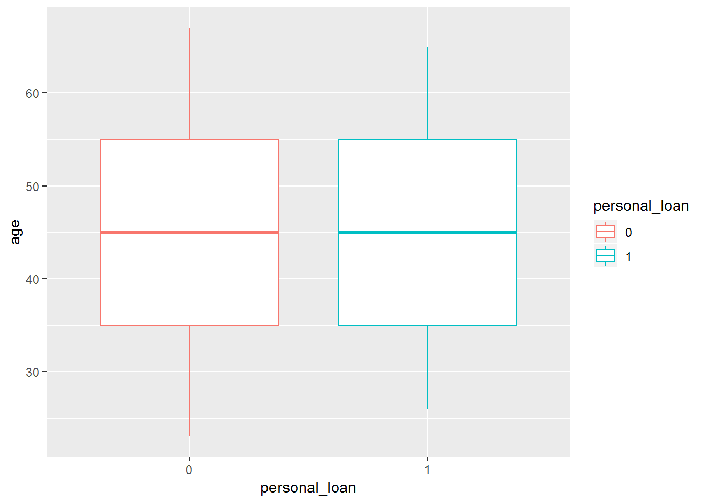
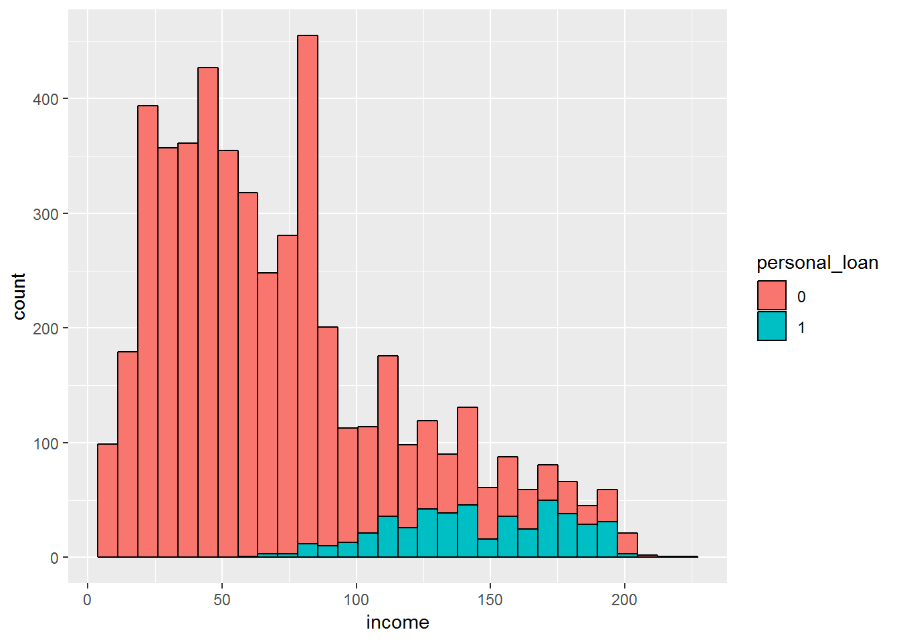
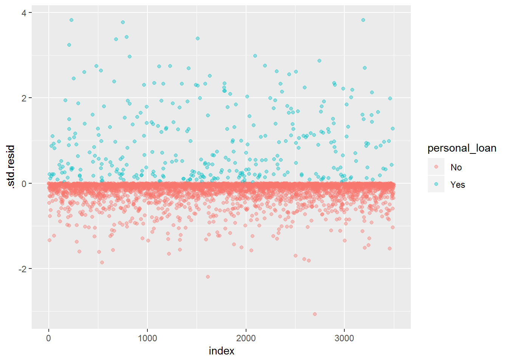
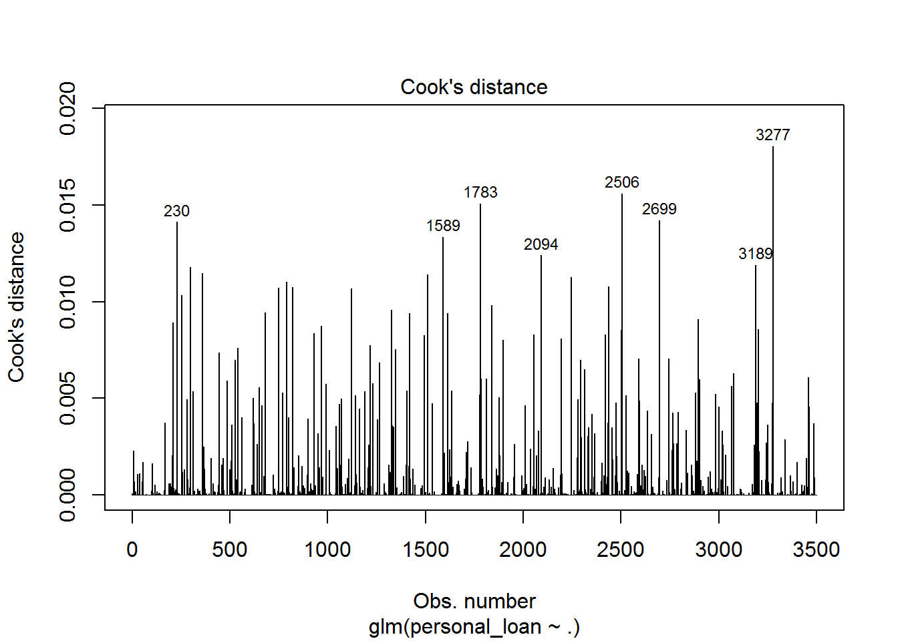

Creating a Model to Predict if a Bank Customer accepts Personal Loans
In this post, we will fit a multiple logistic regression model to predict the probability of a bank customer accepting a personal loan based on multiple variables to be described later. Logistic regression is a supervised learning algorithm were the independent variable has a qualitative nature. In this case, corresponding to the acceptance or rejection of a personal loan. This tutorial will build multiple logistic regression models and assess them.
The data called UniversalBank comes again from the handbook ‘Data Mining for Business Analytics: Concepts, Techniques, and Applications in R’. The bank’s business goal is to find the best combination of variables that can increase the probability of loan acceptance.
Data Exploration
First, we must load our libraries.
library(here)
library(tidyverse) # data wrangling, data visualization
library(broom) # tidy statistics
library(caret) # apply machine learning algorithms
library(janitor) # tidy dataframes
library(MASS) # in this case it's used for the stepwise regression
library(readxl) # open excel files
options(scipen = 999) # number formatting to not include scientific notationAfterwards, we load our data frame and explore it. We also need to transform into factors a couple of our variables so that they are interpretable by our logistic regression models.
# open dataset
bank <- read_excel(here::here("UniversalBank.xlsx"),
skip = 3,
sheet = 2) %>%
clean_names() %>%
mutate_at(vars(education, personal_loan, securities_account, cd_account,
online, credit_card), funs(as.factor))
glimpse(bank)## Observations: 5,000
## Variables: 14
## $ id <dbl> 1, 2, 3, 4, 5, 6, 7, 8, 9, 10, 11, 12, 13, ...
## $ age <dbl> 25, 45, 39, 35, 35, 37, 53, 50, 35, 34, 65,...
## $ experience <dbl> 1, 19, 15, 9, 8, 13, 27, 24, 10, 9, 39, 5, ...
## $ income <dbl> 49, 34, 11, 100, 45, 29, 72, 22, 81, 180, 1...
## $ zip_code <dbl> 91107, 90089, 94720, 94112, 91330, 92121, 9...
## $ family <dbl> 4, 3, 1, 1, 4, 4, 2, 1, 3, 1, 4, 3, 2, 4, 1...
## $ cc_avg <dbl> 1.6, 1.5, 1.0, 2.7, 1.0, 0.4, 1.5, 0.3, 0.6...
## $ education <fct> 1, 1, 1, 2, 2, 2, 2, 3, 2, 3, 3, 2, 3, 2, 1...
## $ mortgage <dbl> 0, 0, 0, 0, 0, 155, 0, 0, 104, 0, 0, 0, 0, ...
## $ personal_loan <fct> 0, 0, 0, 0, 0, 0, 0, 0, 0, 1, 0, 0, 0, 0, 0...
## $ securities_account <fct> 1, 1, 0, 0, 0, 0, 0, 0, 0, 0, 0, 0, 1, 0, 1...
## $ cd_account <fct> 0, 0, 0, 0, 0, 0, 0, 0, 0, 0, 0, 0, 0, 0, 0...
## $ online <fct> 0, 0, 0, 0, 0, 1, 1, 0, 1, 0, 0, 1, 0, 1, 0...
## $ credit_card <fct> 0, 0, 0, 0, 1, 0, 0, 1, 0, 0, 0, 0, 0, 0, 0...Here we can see in more detail each variable description:
Let’s continue our data exploration. We can summarize our data:
# explore dataset
summary(bank)## id age experience income
## Min. : 1 Min. :23.00 Min. :-3.0 Min. : 8.00
## 1st Qu.:1251 1st Qu.:35.00 1st Qu.:10.0 1st Qu.: 39.00
## Median :2500 Median :45.00 Median :20.0 Median : 64.00
## Mean :2500 Mean :45.34 Mean :20.1 Mean : 73.77
## 3rd Qu.:3750 3rd Qu.:55.00 3rd Qu.:30.0 3rd Qu.: 98.00
## Max. :5000 Max. :67.00 Max. :43.0 Max. :224.00
## zip_code family cc_avg education
## Min. : 9307 Min. :1.000 Min. : 0.000 1:2096
## 1st Qu.:91911 1st Qu.:1.000 1st Qu.: 0.700 2:1403
## Median :93437 Median :2.000 Median : 1.500 3:1501
## Mean :93153 Mean :2.396 Mean : 1.938
## 3rd Qu.:94608 3rd Qu.:3.000 3rd Qu.: 2.500
## Max. :96651 Max. :4.000 Max. :10.000
## mortgage personal_loan securities_account cd_account online
## Min. : 0.0 0:4520 0:4478 0:4698 0:2016
## 1st Qu.: 0.0 1: 480 1: 522 1: 302 1:2984
## Median : 0.0
## Mean : 56.5
## 3rd Qu.:101.0
## Max. :635.0
## credit_card
## 0:3530
## 1:1470
##
##
##
## It’s also important to check for any missing values.
# check missing values
sum(is.na(bank))## [1] 0Now that we have confirmed no values are missing, we can start with the visual exploration:
# boxplot
bank %>%
ggplot(aes(x = personal_loan, y = age, colour = personal_loan)) +
geom_boxplot()
# histogram
bank %>%
ggplot(aes(income, fill = personal_loan)) +
geom_histogram(colour = "black")## `stat_bin()` using `bins = 30`. Pick better value with `binwidth`.
It looks like the median age of persons who accepted the loan is similar to the median age of persons who did not accept it. However, the histogram shows that much less customers accepted the loan compared to the ones who rejected it.
This class imbalance, that is, many more people whose loan was rejected than accepted can be an issue to be taken into account when building our model. This post will focus on it later on .
For now, we can compute this imbalance in a more concrete way.
bank %>%
count(personal_loan) %>%
mutate(prop = n / sum(n))## # A tibble: 2 x 3
## personal_loan n prop
## <fct> <int> <dbl>
## 1 0 4520 0.904
## 2 1 480 0.096Thus, only around 10% of our customers accepted the loan.
Building Logistic Regression Models
In this section, we will build our train and test datasets. The goal is to fit our training model, apply it in a testing data frame for validation and to see if it generalizes to new data. In order to create a train and test dataset, we can use the createDataPartition() function from the caret package to make this partition. But before that we should tidy our data frame.
bank_tidy <- bank %>%
dplyr::select(-id, -zip_code) # delete columns id and zipcode - not relevant for the logistic regression model
glimpse(bank) # overview of the dataframe## Observations: 5,000
## Variables: 14
## $ id <dbl> 1, 2, 3, 4, 5, 6, 7, 8, 9, 10, 11, 12, 13, ...
## $ age <dbl> 25, 45, 39, 35, 35, 37, 53, 50, 35, 34, 65,...
## $ experience <dbl> 1, 19, 15, 9, 8, 13, 27, 24, 10, 9, 39, 5, ...
## $ income <dbl> 49, 34, 11, 100, 45, 29, 72, 22, 81, 180, 1...
## $ zip_code <dbl> 91107, 90089, 94720, 94112, 91330, 92121, 9...
## $ family <dbl> 4, 3, 1, 1, 4, 4, 2, 1, 3, 1, 4, 3, 2, 4, 1...
## $ cc_avg <dbl> 1.6, 1.5, 1.0, 2.7, 1.0, 0.4, 1.5, 0.3, 0.6...
## $ education <fct> 1, 1, 1, 2, 2, 2, 2, 3, 2, 3, 3, 2, 3, 2, 1...
## $ mortgage <dbl> 0, 0, 0, 0, 0, 155, 0, 0, 104, 0, 0, 0, 0, ...
## $ personal_loan <fct> 0, 0, 0, 0, 0, 0, 0, 0, 0, 1, 0, 0, 0, 0, 0...
## $ securities_account <fct> 1, 1, 0, 0, 0, 0, 0, 0, 0, 0, 0, 0, 1, 0, 1...
## $ cd_account <fct> 0, 0, 0, 0, 0, 0, 0, 0, 0, 0, 0, 0, 0, 0, 0...
## $ online <fct> 0, 0, 0, 0, 0, 1, 1, 0, 1, 0, 0, 1, 0, 1, 0...
## $ credit_card <fct> 0, 0, 0, 0, 1, 0, 0, 1, 0, 0, 0, 0, 0, 0, 0...bank_tidy$personal_loan <- factor(bank_tidy$personal_loan, levels=c(0,1), labels=c("No","Yes")) # label our dependent variable At this time we create a train and test datasets:
set.seed(1234)
partition <- createDataPartition(bank_tidy$personal_loan,
p = 0.7,
list = FALSE)
train <- bank_tidy[partition, ]
test <- bank_tidy[-partition, ]Now, we will create our first logistic regression model called model0:
model0 <- glm(personal_loan ~., data = train,
family = "binomial")
summary(model0)##
## Call:
## glm(formula = personal_loan ~ ., family = "binomial", data = train)
##
## Deviance Residuals:
## Min 1Q Median 3Q Max
## -3.0710 -0.1969 -0.0750 -0.0243 3.8229
##
## Coefficients:
## Estimate Std. Error z value Pr(>|z|)
## (Intercept) -11.6886570 2.1951529 -5.325 0.000000101087806
## age -0.0450697 0.0817190 -0.552 0.581277
## experience 0.0551820 0.0810369 0.681 0.495904
## income 0.0567793 0.0033629 16.884 < 0.0000000000000002
## family 0.6535239 0.0907246 7.203 0.000000000000587
## cc_avg 0.2176102 0.0514232 4.232 0.000023187946205
## education2 3.6701132 0.3076904 11.928 < 0.0000000000000002
## education3 3.6990124 0.3052904 12.116 < 0.0000000000000002
## mortgage 0.0006775 0.0007203 0.941 0.346916
## securities_account1 -0.8186157 0.3396475 -2.410 0.015944
## cd_account1 3.6962953 0.4023738 9.186 < 0.0000000000000002
## online1 -0.7498566 0.1940857 -3.864 0.000112
## credit_card1 -1.1885202 0.2605629 -4.561 0.000005082427535
##
## (Intercept) ***
## age
## experience
## income ***
## family ***
## cc_avg ***
## education2 ***
## education3 ***
## mortgage
## securities_account1 *
## cd_account1 ***
## online1 ***
## credit_card1 ***
## ---
## Signif. codes: 0 '***' 0.001 '**' 0.01 '*' 0.05 '.' 0.1 ' ' 1
##
## (Dispersion parameter for binomial family taken to be 1)
##
## Null deviance: 2213.43 on 3499 degrees of freedom
## Residual deviance: 847.63 on 3487 degrees of freedom
## AIC: 873.63
##
## Number of Fisher Scoring iterations: 8The model shows that all variables predict a bank costumer loan acceptance, but age, professional experience, and mortgage value. The coefficient estimates show a relationship between the predictors and the dependent variable on a log-odds scale. For instance, an increase of one person in a family is associated with an increase in the log odds of a personal loan acceptance by 0.654 units.
This can be interpreted in a more concrete manner by computing the odds.
exp(coef(model0))## (Intercept) age experience
## 0.000008388432 0.955930861623 1.056732872249
## income family cc_avg
## 1.058422211865 1.922302973299 1.243102411023
## education2 education3 mortgage
## 39.256351249957 40.407379004231 1.000677707014
## securities_account1 cd_account1 online1
## 0.441041769988 40.297738262092 0.472434286781
## credit_card1
## 0.304671776448This shows that an increase of one family member, increases the odds of a bank costumer accepting a personal loan by a factor of 1.922.
Let’s now check if we have outliers in our data set. In case we find them , we will not delete them; it’s just something to have in mind while doing this type of analysis. Note: we will do this analysis only for model0. First, we should use the augment() function from the broom package to get the residuals data of our statistical model. In the next step, we should use ggplot2 to visualize possible outliers.
#- check for some assumptions
# Residual Assessment
tidy_mod0 <- broom::augment(model0) %>%
mutate(index = 1:n())
tidy_mod0 %>%
ggplot(aes(x = index, y = .std.resid, colour = personal_loan)) +
geom_point(alpha = 0.4)
It looks like we have some cases above 3. Let’s check how many there are and the corresponding number of the case.
tidy_mod0 %>%
filter(abs(.std.resid) > 3) %>%
count()## # A tibble: 1 x 1
## n
## <int>
## 1 8plot(model0, which = 4, id.n = 8)
In total, we have 8 cases exceeding 3 and in the graph above we can see the number of the corresponding case.
Now, we should move on and focus in fitting our training data. For the creation of model1, we will use a stepwise regression with the function stepAIC() from the MASS package.
# model1
step_log <- stepAIC(model0, direction = "both")## Start: AIC=873.63
## personal_loan ~ age + experience + income + family + cc_avg +
## education + mortgage + securities_account + cd_account +
## online + credit_card
##
## Df Deviance AIC
## - age 1 847.94 871.94
## - experience 1 848.10 872.10
## - mortgage 1 848.51 872.51
## <none> 847.63 873.63
## - securities_account 1 853.99 877.99
## - online 1 862.82 886.82
## - cc_avg 1 866.06 890.06
## - credit_card 1 871.61 895.61
## - family 1 905.35 929.35
## - cd_account 1 948.44 972.44
## - education 2 1110.12 1132.12
## - income 1 1353.89 1377.89
##
## Step: AIC=871.94
## personal_loan ~ experience + income + family + cc_avg + education +
## mortgage + securities_account + cd_account + online + credit_card
##
## Df Deviance AIC
## - mortgage 1 848.82 870.82
## - experience 1 849.79 871.79
## <none> 847.94 871.94
## + age 1 847.63 873.63
## - securities_account 1 854.20 876.20
## - online 1 863.10 885.10
## - cc_avg 1 866.47 888.47
## - credit_card 1 871.87 893.87
## - family 1 905.49 927.49
## - cd_account 1 949.00 971.00
## - education 2 1113.95 1133.95
## - income 1 1362.70 1384.70
##
## Step: AIC=870.82
## personal_loan ~ experience + income + family + cc_avg + education +
## securities_account + cd_account + online + credit_card
##
## Df Deviance AIC
## - experience 1 850.63 870.63
## <none> 848.82 870.82
## + mortgage 1 847.94 871.94
## + age 1 848.51 872.51
## - securities_account 1 855.11 875.11
## - online 1 863.90 883.90
## - cc_avg 1 866.69 886.69
## - credit_card 1 873.04 893.04
## - family 1 906.55 926.55
## - cd_account 1 950.10 970.10
## - education 2 1114.58 1132.58
## - income 1 1375.72 1395.72
##
## Step: AIC=870.63
## personal_loan ~ income + family + cc_avg + education + securities_account +
## cd_account + online + credit_card
##
## Df Deviance AIC
## <none> 850.63 870.63
## + experience 1 848.82 870.82
## + age 1 848.98 870.98
## + mortgage 1 849.79 871.79
## - securities_account 1 856.79 874.79
## - online 1 865.53 883.53
## - cc_avg 1 867.64 885.64
## - credit_card 1 874.19 892.19
## - family 1 907.85 925.85
## - cd_account 1 951.40 969.40
## - education 2 1115.49 1131.49
## - income 1 1376.23 1394.23We can see which variables were kept for our model.
step_log##
## Call: glm(formula = personal_loan ~ income + family + cc_avg + education +
## securities_account + cd_account + online + credit_card, family = "binomial",
## data = train)
##
## Coefficients:
## (Intercept) income family
## -12.53157 0.05694 0.65103
## cc_avg education2 education3
## 0.20736 3.63049 3.62850
## securities_account1 cd_account1 online1
## -0.80475 3.69255 -0.74104
## credit_card1
## -1.17166
##
## Degrees of Freedom: 3499 Total (i.e. Null); 3490 Residual
## Null Deviance: 2213
## Residual Deviance: 850.6 AIC: 870.6Now, it’s time to create our model1.
model1 <- glm(personal_loan ~ income + family + cc_avg + education +
securities_account + cd_account + online + credit_card, family = "binomial",
data = train)
summary(model1)##
## Call:
## glm(formula = personal_loan ~ income + family + cc_avg + education +
## securities_account + cd_account + online + credit_card, family = "binomial",
## data = train)
##
## Deviance Residuals:
## Min 1Q Median 3Q Max
## -3.0644 -0.2006 -0.0757 -0.0248 3.8089
##
## Coefficients:
## Estimate Std. Error z value Pr(>|z|)
## (Intercept) -12.531566 0.649065 -19.307 < 0.0000000000000002 ***
## income 0.056935 0.003338 17.057 < 0.0000000000000002 ***
## family 0.651028 0.090765 7.173 0.000000000000735 ***
## cc_avg 0.207358 0.051010 4.065 0.000048021236068 ***
## education2 3.630494 0.305323 11.891 < 0.0000000000000002 ***
## education3 3.628497 0.299617 12.110 < 0.0000000000000002 ***
## securities_account1 -0.804754 0.338964 -2.374 0.017589 *
## cd_account1 3.692554 0.401937 9.187 < 0.0000000000000002 ***
## online1 -0.741044 0.193565 -3.828 0.000129 ***
## credit_card1 -1.171660 0.258974 -4.524 0.000006061455975 ***
## ---
## Signif. codes: 0 '***' 0.001 '**' 0.01 '*' 0.05 '.' 0.1 ' ' 1
##
## (Dispersion parameter for binomial family taken to be 1)
##
## Null deviance: 2213.43 on 3499 degrees of freedom
## Residual deviance: 850.63 on 3490 degrees of freedom
## AIC: 870.63
##
## Number of Fisher Scoring iterations: 8All variables predict the loan acceptance. We will create one last model, called model2. The most important predictors present in model1 will be applied to this last model. To get the information about the most relevant predictors, we will use the varImp() from the caret package.
caret::varImp(model1) %>%
tibble::rownames_to_column("variable") %>%
arrange(desc(Overall))## variable Overall
## 1 income 17.057007
## 2 education3 12.110460
## 3 education2 11.890650
## 4 cd_account1 9.186890
## 5 family 7.172696
## 6 credit_card1 4.524234
## 7 cc_avg 4.065055
## 8 online1 3.828393
## 9 securities_account1 2.374156We will choose some of the most important variables and create model2.
# model2
model2 <- glm(personal_loan ~ income + family + education + cd_account + credit_card + cc_avg +
online, family = "binomial",
data = train)
summary(model2)##
## Call:
## glm(formula = personal_loan ~ income + family + education + cd_account +
## credit_card + cc_avg + online, family = "binomial", data = train)
##
## Deviance Residuals:
## Min 1Q Median 3Q Max
## -2.9380 -0.2015 -0.0754 -0.0249 3.8286
##
## Coefficients:
## Estimate Std. Error z value Pr(>|z|)
## (Intercept) -12.67077 0.64658 -19.596 < 0.0000000000000002 ***
## income 0.05731 0.00333 17.211 < 0.0000000000000002 ***
## family 0.65229 0.09047 7.210 0.000000000000559 ***
## education2 3.65868 0.30516 11.989 < 0.0000000000000002 ***
## education3 3.62688 0.29823 12.161 < 0.0000000000000002 ***
## cd_account1 3.23195 0.34597 9.342 < 0.0000000000000002 ***
## credit_card1 -1.06774 0.25258 -4.227 0.000023642291067 ***
## cc_avg 0.20572 0.05079 4.051 0.000051093604328 ***
## online1 -0.70415 0.19220 -3.664 0.000249 ***
## ---
## Signif. codes: 0 '***' 0.001 '**' 0.01 '*' 0.05 '.' 0.1 ' ' 1
##
## (Dispersion parameter for binomial family taken to be 1)
##
## Null deviance: 2213.43 on 3499 degrees of freedom
## Residual deviance: 856.79 on 3491 degrees of freedom
## AIC: 874.79
##
## Number of Fisher Scoring iterations: 8Assssment of the Logistic Regression Models
Now with the help of the caret package we have to assess which model has a better performance. We will use three key performance metrics: accuracy, ppv, or positive predicted values, and npv, negative predicted values. Accuracy corresponds to the True Positives (TP) + the True Negatives(TN) divided by the TP + TN + False Positive(FP) + False Negatives(FN). PPV corresponds to the cases rightfully identified as positive(TP) divided by the TP + FP. The NPV is the number of cases rightfully identified as negative(TN) divided by the TN + FN.
It’s now time to build our models by using the function confusionMatrix to compute their metrics. Note: For each model, a sampling method called upsampling will be used due to the imbalance present in our dependent variable.
- model0
# model0
glm0 <- train(personal_loan ~., method = "glm",
family = "binomial",
data = train,
trControl = trainControl(method = "none",
sampling = "up")) # upsampling use because
confusionMatrix(predict(glm0,
train), train$personal_loan, positive = "Yes")## Confusion Matrix and Statistics
##
## Reference
## Prediction No Yes
## No 2843 38
## Yes 321 298
##
## Accuracy : 0.8974
## 95% CI : (0.8869, 0.9073)
## No Information Rate : 0.904
## P-Value [Acc > NIR] : 0.9103
##
## Kappa : 0.5707
## Mcnemar's Test P-Value : <0.0000000000000002
##
## Sensitivity : 0.88690
## Specificity : 0.89855
## Pos Pred Value : 0.48142
## Neg Pred Value : 0.98681
## Prevalence : 0.09600
## Detection Rate : 0.08514
## Detection Prevalence : 0.17686
## Balanced Accuracy : 0.89273
##
## 'Positive' Class : Yes
## - model1
glm1 <- train(personal_loan ~ income + family + cc_avg + education +
securities_account + cd_account + online + credit_card, method = "glm",
family = "binomial",
data = train,
trControl = trainControl(method = "none",
sampling = "up"))
confusionMatrix(predict(glm1,
train), train$personal_loan, positive = "Yes")## Confusion Matrix and Statistics
##
## Reference
## Prediction No Yes
## No 2843 39
## Yes 321 297
##
## Accuracy : 0.8971
## 95% CI : (0.8866, 0.907)
## No Information Rate : 0.904
## P-Value [Acc > NIR] : 0.919
##
## Kappa : 0.569
## Mcnemar's Test P-Value : <0.0000000000000002
##
## Sensitivity : 0.88393
## Specificity : 0.89855
## Pos Pred Value : 0.48058
## Neg Pred Value : 0.98647
## Prevalence : 0.09600
## Detection Rate : 0.08486
## Detection Prevalence : 0.17657
## Balanced Accuracy : 0.89124
##
## 'Positive' Class : Yes
## - model2
glm2 <- train(personal_loan ~ income + family + education + cd_account +
credit_card + cc_avg + online, method = "glm",
family = "binomial",
data = train,
trControl = trainControl(method = "none",
sampling = "up"))
confusionMatrix(predict(glm2,
train), train$personal_loan, positive = "Yes")## Confusion Matrix and Statistics
##
## Reference
## Prediction No Yes
## No 2852 37
## Yes 312 299
##
## Accuracy : 0.9003
## 95% CI : (0.8899, 0.91)
## No Information Rate : 0.904
## P-Value [Acc > NIR] : 0.7816
##
## Kappa : 0.5794
## Mcnemar's Test P-Value : <0.0000000000000002
##
## Sensitivity : 0.88988
## Specificity : 0.90139
## Pos Pred Value : 0.48936
## Neg Pred Value : 0.98719
## Prevalence : 0.09600
## Detection Rate : 0.08543
## Detection Prevalence : 0.17457
## Balanced Accuracy : 0.89564
##
## 'Positive' Class : Yes
## Looking at the 3 confusion matrices, it seems that model2 has a higher accuracy, ppv, and npv. Nonetheless, model0 and model1 are also highly accurate. However, we still have to check how these models generalize to new data.
Generalization of the Logistic Regression Models to new Data
Now, we should check how the models generalize to new data.
- model0
# model0
confusionMatrix(predict(glm0,
test), test$personal_loan, positive = "Yes")## Confusion Matrix and Statistics
##
## Reference
## Prediction No Yes
## No 1227 9
## Yes 129 135
##
## Accuracy : 0.908
## 95% CI : (0.8922, 0.9221)
## No Information Rate : 0.904
## P-Value [Acc > NIR] : 0.3181
##
## Kappa : 0.6138
## Mcnemar's Test P-Value : <0.0000000000000002
##
## Sensitivity : 0.9375
## Specificity : 0.9049
## Pos Pred Value : 0.5114
## Neg Pred Value : 0.9927
## Prevalence : 0.0960
## Detection Rate : 0.0900
## Detection Prevalence : 0.1760
## Balanced Accuracy : 0.9212
##
## 'Positive' Class : Yes
## - model1
# model1
confusionMatrix(predict(glm1,
test), test$personal_loan, positive = "Yes")## Confusion Matrix and Statistics
##
## Reference
## Prediction No Yes
## No 1226 9
## Yes 130 135
##
## Accuracy : 0.9073
## 95% CI : (0.8915, 0.9215)
## No Information Rate : 0.904
## P-Value [Acc > NIR] : 0.3503
##
## Kappa : 0.6119
## Mcnemar's Test P-Value : <0.0000000000000002
##
## Sensitivity : 0.9375
## Specificity : 0.9041
## Pos Pred Value : 0.5094
## Neg Pred Value : 0.9927
## Prevalence : 0.0960
## Detection Rate : 0.0900
## Detection Prevalence : 0.1767
## Balanced Accuracy : 0.9208
##
## 'Positive' Class : Yes
## - model2
# model2
confusionMatrix(predict(glm2,
test), test$personal_loan, positive = "Yes")## Confusion Matrix and Statistics
##
## Reference
## Prediction No Yes
## No 1226 11
## Yes 130 133
##
## Accuracy : 0.906
## 95% CI : (0.8901, 0.9203)
## No Information Rate : 0.904
## P-Value [Acc > NIR] : 0.4177
##
## Kappa : 0.6045
## Mcnemar's Test P-Value : <0.0000000000000002
##
## Sensitivity : 0.92361
## Specificity : 0.90413
## Pos Pred Value : 0.50570
## Neg Pred Value : 0.99111
## Prevalence : 0.09600
## Detection Rate : 0.08867
## Detection Prevalence : 0.17533
## Balanced Accuracy : 0.91387
##
## 'Positive' Class : Yes
## All models maintain or slightly increase their metrics in the test dataset. Thus, the metrics of all models are good.
Nonetheless, to keep our model simpler, we will choose model2. Now that we have our final model, it’s time for some predictions. Let us imagine that we have two bank customers. They have the same characteristics in relation to the variables of our model2, but one, income. While customer A has an annual income of 100 thousand dollars, customer B has a 45 thousand dollars annual income. We can use the predict() function to compare the probability of accepting a loan based on this income difference.
predict(model2, data.frame(income = c(100, 45),
family = c(3, 3),
cc_avg = c(0.8, 0.8),
education = c("3", "3"),
securities_account = c("1", "1"),
cd_account = c("1", "1"),
credit_card = c("1", "1"),
online = c("1", "1")),
type = "response")## 1 2
## 0.56672287 0.05297574As a result, the probability of accepting a loan is of 56.67% for customer A, while for customer B is only 5.30%.
As mentioned in a previous post, a more advanced algorithm could have given us more predictive power. So, we should always keep that in mind. Hope you liked this post. Thanks again and feel free to contact me!